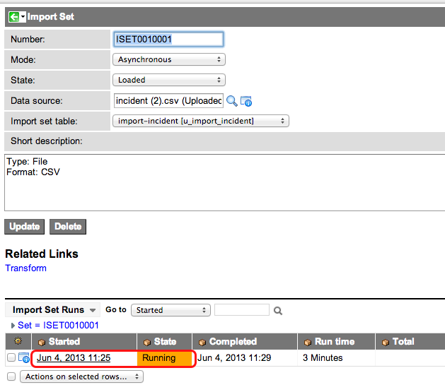

Importing Data Using Import Sets
| |
Note: This article applies to Fuji and earlier releases. For more current information, see Importing Data Using Import Sets at http://docs.servicenow.com
The ServiceNow Wiki is no longer being updated. Visit http://docs.servicenow.com for the latest product documentation. |
Contents
1 Overview
{kind=link}
An import set acts as a staging table to store raw data from an external source. The import process uses a transform map to add or update data from the import set to an existing ServiceNow table such as incident or problem.
Use import sets to:
- Manually import data from a file on your local system
- Manually import data from a data source
- Periodically import data from a data source with a scheduled import
- Programmatically import data from a file with a script
- Programmatically import data from a web service
2 Maximum Row Size
A single row in a database may not contain more than 8126 bytes of data. The size of each row is determined by the amount of content in all fields, as well as the character set for text fields. For example, a row with 10 text fields each containing 1000 characters using a French character set takes 15360 bytes.
Attempting to import more data to a single row than the maximum size causes the import to skip that row. Any rows that were skipped for this reason are listed in the import log.
3 Creating a New Import Table or Adding to an Existing One
From the left navigation menu, go to: System Import Sets > Load Data
The second step is to create or load an Import Set table by uploading an Excel or CSV file, or from a predefined Data Source. For file imports, the CSV file format is preferred, due to occasional import issues with the way that Excel can alter data format. The label is used to determine the name for the Import Set table that data will be loaded into. It is also possible to choose an existing Import Set table to use for loading data from the same source, or data that has the same field/column designations. When an existing Import Set table is chosen the table columns are added when the incoming source of data contains fields/columns that do not exist.
It is also necessary to choose a data source. It is possible at this point to define a new data source by browsing for a file to import. Supported formats are XLS and CSV. It is also necessary to specify the parameters of the file that is being imported. From here it is also possible to select an existing data source for use in the import operation.
| |
Note: By default, up to 20 records of the source data are sampled to determine the import set field length. If the field is empty in all the sampled records, the default length of 40 is used. Any data loaded that exceeds the import set table field length is truncated. To prevent the truncation of fields and enable "dynamic" field resize, set the "com.glide.loader.verify_target_field_size" property to "true." |
3.1 Supported Import Formats
ServiceNow can import the following file formats.
| Format | Limitations |
|---|---|
| CSV | CSV files must comply with the proposed CSV standard in RFC4180. In particular, this means that double quotes may not appear inside fields. The first row of data in an imported CSV file becomes the header row and defines the columns for that import set. |
| Excel | Excel files must have the XLS extension. Excel files with the XLSX extension will produce an error. |
| XML | XML files must have a consistent XPath for each data row. If you are trying to load an update set XML file, see Loading Customizations from a Single XML File instead. |
In addition, ServiceNow can import data from the following external data sources.
| Data Source | Limitations |
|---|---|
| JDBC | Some network configurations may require a MID Server. |
| LDAP | LDAP imports require a valid transform map. |
3.2 Preserving Leading Spaces in Excel Imports
Use the system property glide.import_set.preserve.leading.spaces to preserve leading spaces when importing data from Excel.
| |
Note: The import process always removes trailing spaces from Excel data cells. |
| Property | Description |
|---|---|
| glide.import_set.preserve.leading.spaces | Specifies whether the import process preserves leading spaces in Excel data cells. When false, the import process removes leading spaces from Excel data cells. When true, the import process preserves leading spaces.
|
3.3 Ignoring Bad Data Rows in CSV Files
Use the system property com.glide.csv.loader.ignore_non_parseable_lines to ignore data rows in CSV files that ServiceNow cannot parse. By default, imports cannot ignore bad data rows in CSV files and fail on the first error.
To allow an import to ignore one or more rows of bad data, set the system property com.glide.csv.loader.ignore_non_parseable_lines to true. To specify the maximum number lines (rows) that an instance can ignore before the import fails, set the system property com.glide.csv.loader.max_errors_allowed.
| Property | Description |
|---|---|
| com.glide.csv.loader.ignore_non_parseable_lines | Allows an instance to ignore one or more lines (rows) that contain bad data (such as a row that is missing a column of data).
|
| com.glide.csv.loader.max_errors_allowed | Specify the maximum number of lines (rows) that an import can ignore before failing. If the import succeeds, the import lists the number of rows the import ignored due to errors.
|
4 Reviewing the Import Set
Even if no errors were reported by the progress indicator it is still probably a good idea see how your new data was inputted into the new import set. To do so click on the link for "View imported data." There are several fields that will be visible in the table that were not part of the original data source, these are system rows can be used to facilitate scripted import operations. When you are finished reviewing the data, return to the previous page. The next step is to create a transform map to associate with this Import Set by clicking the link to do so.
4.1 Controlling Import Table Dictionary Entries
Use the system property glide.import_set_row.dynamically_add_fields to control whether an import can automatically change the dictionary entries for staging tables. In previous releases, allowing imports (such as LDAP) to automatically update staging tables sometimes resulted in an instances becoming unresponsive. Set the system property to false to prevent an import from changing a staging table's dictionary entry.
| Property | Description |
|---|---|
| glide.import_set_row.dynamically_add_fields | Specifies whether an import set can add new columns to the staging table (true) or not (false). Instances that contain large numbers of import sets can sometimes become unresponsive when an import adds a column because the instance must alter every row in the staging table. In some cases, the database alter table action causes an outage. Setting this property to false prevents an import set from adding columns to the staging table and produces a log message. As a workaround, administrators can manually add a column to the staging table by creating a new dictionary entry and then reimporting the import set.
|
4.2 Setting the Import Log Level
Use the system property to control the log level for import sets.
| Property | Description |
|---|---|
| com.glide.import_set.importlog_level | Specifies how much information import sets add to the log. Possible values are INFO, WARNING, and ERROR. You can set this to INFO in dev environment and change it to WARNING or ERROR in production to reduce amount of logging noise traffic to the database.
|
5 Creating a Transform Map
A Transform Map determines how data is mapped onto a ServiceNow table.
First, it is necessary to specify a destination table and select a method of mapping. Under the right circumstances, where field names in the Import Set and the destination table are identical or nearly identical, this is as simple as clicking the Auto map from matching fields button. If any fields are not mapped by the auto matching utility, it is also possible to specify mapping relationships using a simple drag-and-drop interface by clicking the Mapping assist button. When using this utility, it is possible to match one source field to multiple destination fields.
| |
Note: When there are no transform field mappings or row scripts (for example, onBefore or onAfter scripts) defined in a transform map, row transformation will be skipped, instead of cycling through every source record. All import source rows will remain in the Pending state, the transform total row count will be zero, and the transform history state will be complete. The onStart and onComplete scripts will still get executed, if defined. |
6 Run Import
From a Transform Map, you can click Run Import to do just that. When the import is done, you'll see a link to go straight to the target table containing your imported records. The amount of time that it takes to run an import varies depending on the number of record to be imported and may take as long as several hours for very large import operations (tens of thousands of records).
At this point, you may click on the link View the imported data to see the loaded import set table, Create transform map to create a new transform map to transform the data in the import set table to its target table, or Run import to execute an existing transform map for the loaded data.
Here is the result of viewing the import set data (you may also click on the application module that is automatically created when the import set is created):
Three things to note at this point:
- The spreadsheet was imported, and a new table was created to hold the data.
- Within that table, the imported records are designated with their own "Set" value (in this case, "ISET10004").
- A new module was created in the System Import Sets application for the new table.
7 Cancelling an Import Set
You can stop a scheduled import that is taking too much time.
To cancel an import in progress:
- Navigate to System Import Sets > Advanced > Progress.
- Open the Progress Worker that must be canceled.
- Click the Cancel job Related Link.
{kind=link}
To cancel the transformation of a running import set:
- Navigate to System Import Sets > Advanced > Import Sets.
- Select the import set with a state of Loaded.
-
- Select the import set run with a state of Running.
- Select a running import set
- Click the Cancel transform related link.
-
{kind=link}
{kind=link}
{kind=link}
8 Posting CSV or Excel Files Directly to an Import Set
An administrator can post CSV or Excel files directly to instance using the following post syntax:
https://instance.service-now.com/sys_import.do?sysparm_import_set_tablename=table_name&sysparm_transform_after_load=true&uploadfile=path/to/file.csv
The sys_import.do target lets you dynamically upload a CSV or Excel file into the import set table specified by the sysparm_import_set_tablename parameter. You must specify a name that matches an existing import set table name, if it does not exist, pre-create it by doing a manual import. The sysparm_transform_after_load=true parameter makes the CSV transform execute immediately, if a transform map exists.
8.1 Perl Example
The following is an example of using perl to post a CSV file with basic auth credentials.
# file: uploadafile.pl
# call me like this:
# uploadafile.pl --url="https://instance.service-now.com/sys_import.do?sysparm_import_set_tablename=dloo_test&sysparm_transform_after_load=true"
# --uploadfile=/Users/davidloo/Desktop/test_files/test_users.csv
#
# the "sysparm_transform_after_load=true" parameter instructs the import set to transform immediately after loading
#
use strict;
use LWP::UserAgent;
use HTTP::Request::Common;
use Getopt::Long;
use File::Basename;
my ( $o_url, $o_fqn );
GetOptions(
"url=s" => \$o_url,
"uploadfile=s" => \$o_fqn,
);
# mandatory arguments: url
&usage unless ( $o_url && $o_fqn );
my $url = $o_url;
my $fname = $o_fqn;
# put timeouts, proxy etc into the useragent if needed
my $ua = LWP::UserAgent->new();
# setup basic authentication credentials
$ua->credentials(
'demo.service-now.com:443',
'Service-now',
'admin' => 'admin'
);
my $req = POST $url, Content_Type => 'form-data',
Content => [
submit => 1,
upfile => [ $fname ]
];
my $response = $ua->request($req);
if ($response->is_success()) {
print "OK: ", $response->content;
} else {
print $response->as_string;
}
exit;
sub usage {
printf "usage: %s --url=%s --uploadfile=%s\\n",
basename($0),'https://....','c:/data/test.csv';
exit
}
8.2 Java Example
The following is a Java example using Apache's HttpClient class.
| |
Note: The Apache HttpClient may limit the amount of data you can import in a single transaction. This example is meant as a starting point and should not be used in production. |
HttpClient httpclient = new HttpClient();
PostMethod post = new PostMethod("https://instance-name.service-now.com/sys_import.do?sysparm_import_set_tablename=u_test_upload&sysparm_transform_after_load=true");
try {
Credentials defaultcreds = new UsernamePasswordCredentials("admin", "admin");
httpclient.getState().setCredentials(AuthScope.ANY, defaultcreds); // Prepare HTTP post
httpClient.getParams().setAuthenticationPreemptive(true);
File targetFile = new File("/Users/davidloo/Desktop/test_files/nodeinfo2736820198834983863.csv");
Part[] parts = { new FilePart(targetFile.getName(), targetFile) };
post.setRequestEntity(new MultipartRequestEntity(parts, post.getParams()));
int result = httpclient.executeMethod(post);
// Display status code
System.out.println("Response status code: " + result);
// Display response
System.out.println("Response body: "+post.getResponseBodyAsString());
} catch(Exception e) {
System.err.println(e.getMessage());
} finally {
// Release current connection to the connection pool
// once you are done
post.releaseConnection();
}
9 Enhancements
9.1 Dublin
- A new system property com.glide.import_set.importlog_level specifies the logging level for import sets.
- You can cancel the transformation of a running import set from the transform history.
- When there are no transform field mappings or row scripts (for example, onBefore or onAfter scripts) defined in a transform map, row transformation will be skipped, instead of cycling through every source record.
- ServiceNow includes the Oracle 11g JDBC driver. This driver allows SSL communication with new versions of Oracle software.
9.2 Calgary
The following enhancements are available as of the Calgary release.
- A new system property glide.import_set.preserve.leading.spaces specifies whether the import process preserves leading spaces in Excel data cells.
- A new system property glide.import_set_row.dynamically_add_fields controls whether an import can automatically change the dictionary entries for staging tables.
- A new system property com.glide.csv.loader.ignore_non_parseable_lines allows imports to ignore data rows in CSV files that ServiceNow cannot parse.
- A new system property com.glide.csv.loader.max_errors_allowed specifies the maximum number of lines (rows) that an import can ignore before failing.